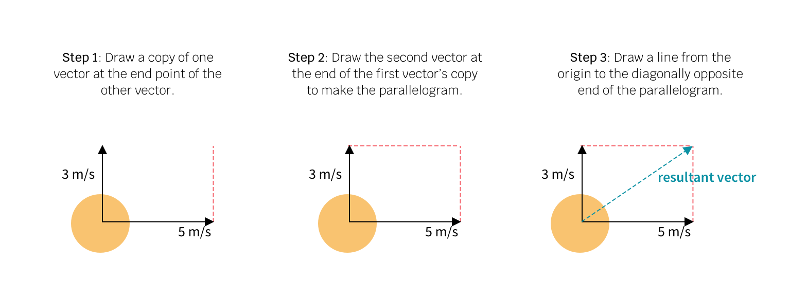
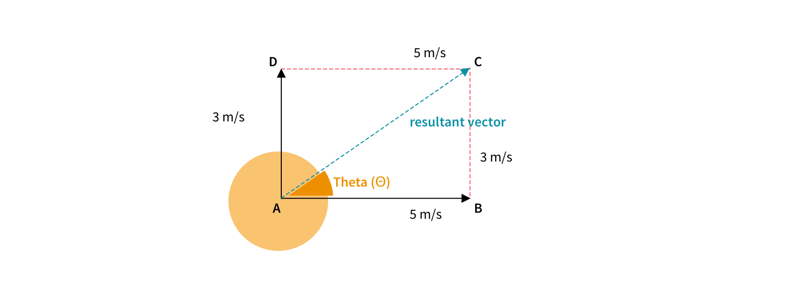

Vectors: Magnitude and Direction
Consider a ball that you are playing with, 🏀 It is moving with a velocity of 3m/s in the y direction and 5m/s in the x direction. How can you determine the final motion velocity? You can calculate the final motion velocity by creating a parallelogram.
A vector is made of two quantities - direction and magnitude. From this parallelogram how can we calculate the direction and magnitude? For this, we make the use of polar coordinates.
To calculate Θ (resultant vector direction), tan (Θ) = BC/AB tan (Θ) = 3/5 Θ = arctan(3/5) = 30.96° To calculate resultant vector magnitude, sin (Θ) = BC/AC sin (Θ) = 3/magnitude We found Θ to be 30.96° sin (30.96°) = 3/magnitude 0.51 = 3/magnitude magnitude = 3/0.51 = 5.88 Thus, the resultant vector has a magnitude of 5.88 in the direction 30.96° Try making your own vectors by changing the magnitude of x,y directions: